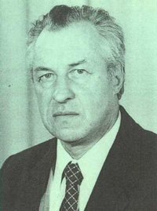

ПЕРСОНАЛЬНОЕ ДЕЛО гр. Хлебникова С.Д.
Автобиография Станислава Дмитриевича Хлебникова, написанная им от третьего лица, пожелавшего остаться неизвестным
Предварительные замечания
1. Всем известно, что время, как и любая материальная субстанция, под воздействием внешних сил движется с ускорением. В детстве оно еле-еле ползет, а под занавес жизни года мелькают, как вагоны курьерского поезда, хотя взрослеть уже совсем не хочется. Из этого следует, что главное место в жизнеописании должно занимать детство, потом — немного отрочество и уж совсем чуть-чуть — так называемая «зрелость», стремительно переходящая в лучезарную старость.2. На объективность описания существенное влияние оказывает такое загадочное явление, как склероз памяти. Это свойство избирательно: всегда забываются позорные или просто обидные факты из жизни и ярко высвечиваются обстоятельства, где ты — молодец или прикоснулся к чему-то значительному. Например, часто говорится о задушевных отношениях с великим человеком, даже в том случае, если ваши жизненные пути пересеклись лишь однажды на трамвайном маршруте... Вот почему опасно доверять написание автобиографии лично субъекту
3. Биограф постарался сохранить манеру изложения описанта — в жанре лёгкого трёпа, чтобы передать несерьёзное его отношение к жизни, себе и окружающим, хотя тот уверяет, что основным мотивом данной писанины является участившийся вполне серьёзный уход сверстников, многих из которых он любил и уважал. К тому же кончается ХХ-й век, начинается третье тысячелетие, грех не воспользоваться моментом, когда любое высказывание может приобрести глубокий исторический смысл.
Звучит? А ведь это — из анекдота про какаду.
Приступим к жизнеописанию. Из-за "склероза" описанта вынуждены опустить освещение наиболее содержательного периода его внутриутробной жизни. Станислав Дмитриевич утверждает только, что вёл себя очень достойно, хотя, по словам матери, её все время тошнило.
Трёхкилограммовый Станислав Дмитриевич (далее — С.Д.) родился 5 октября 1931 года в городе Ростове-на-Дону на ул. Краснофлотской, 2, напротив театра имени М.Горького. Много лет спустя на месте его рождения (точнее в 30-ти метрах от снесённого дома) будет сооружена грандиозная стела "Ника", вес которой в тысячу раз превысит вес младенца вместе с его люлькой и бабушкой — Марией Ивановной. С.Д. не помнит голода 1933 года, о котором с ужасом говорили взрослые. Наоборот, считает, что питание было вполне сносным — всегда свежее грудное молоко.
Первое яркое воспоминание детства — диван, доверху набитый каштанами и орехами. Однако, это уже город Туапсе, куда перевели отца-железнодорожника на работу. Из ужасных воспоминаний туапсинского периода — козлёнок, захотевший пободаться с таким же безрогим, но очень впечатлительным (т.е. трусливым) мальчиком.
Будучи одарённым от природы, С.Д. легко поступил в дет. ясли, а затем и в садик, который успешно окончил.
Новое место жительства — станция Попасная на Донбассе, куда снова перевели отца. Здесь ребёнок был осчастливлен первой влюблеённостью в одноклассницу Лиду (1-А класс ж/д школы). Любовь не выдержала испытаний временем из-за нового увлечения: семья купила поросёнка для откорма, и Станислав Дмитриевич был назначен главным пастухом на улицах, заросших лебедой. Поросёнок стал важной жизненной вехой, так как благодаря ему ребёнок осознал, что такое ответственность. А отвечать пришлось очень скоро, т.к. заигравшись с друзьями, пастух потерял вверенное ему животное, и отец в мундире бегал по посёлку, пытаясь вернуть домой свободолюбивую хрюшку. Жители прилегающих улиц веселились от души, пастух же получил основательную порку. Это был единственный, но серьёзный урок. Ребёнок понял, что никогда не следует браться за дело, требующее ответственности. Такой руководящий принцип позволил ему избегать всевозможных порок в дальнейшей жизни.
Войну мальчик встретил с восторгом. На улицах появилось много красноармейцев с винтовками, у отца — новая военная форма с хрустящими ремнями (как они пахли!) и наганом. Но самое главное — предстояла долгожданная поездка с красивым название "эвакуация" в Ростов к бабушке. Непонятно только, почему мама и даже папа плачут на перроне и целуются, целуются... Как оказалось, это было прощание с отцом навсегда.
В Ростов ехали очень долго (300 км — 20 дней), но не доехали, т.к. немцы их обогнали (первая оккупация Ростова — ноябрь 1941 года). Высадились в Новочеркасске, где жила мамина сестра — тётя Ксеня. В однокомнатной её квартире совсем не было тесно, т.к. никаких вещей Хлебниковы не довезли, а годовалая сестрёнка Стасика — Света — занимала немного места. Семья планировала перебраться в хутор Арпачин, уже к другой бабушке, но баба Оля, наоборот, приехала к ним. С тех пор Новочеркасск стал родиной Станислава Дмитриевича на всю оставшуюся жизнь.
Война разонравилась мальчику из-за постоянного голода и ужаса единственной бомбёжки, под которую он попал. В других отношениях военная жизнь была шикарной - никакой школы, навалом настоящего оружия и взрывчатки из разграбленного артсклада, успешные диверсии в корыстных целях (взрыв школьного сортира - для добычи дров на продажу), почти открытое курение и другие радости...
Время шло, война кончилась, мальчик взрослел и духовно рос, пока не достиг 168 см, на чём прекратил.
Остается расставить жизненные вехи. 1949 - окончание 3-й средней школы и поступление в Новочеркасский Политехнический Институт (энергофак). 1949-54 - незабываемое студенческое время — сессии, турпоходы, серьёзный мордобой (чемпион Ростовской области по боксу в полулёгком весе), пылкая любовь и женитьба на Алисе Беккер, студентке-маркшейдере. Далее — комната в общежитии, увлечение рисованием, подводным спортом, охотой и рыбалкой, а также институтской стенгазетой "Пылесос", в которой он с Ю. Коженцевым долго и безнаказанно потешались над отдельными студентами и преподавателями НПИ.
По ходу жизни рождались дети: Дима (1954), Коля (1957), Ладушка (1967). Дети приносили радость, а потом — внуков, которые, кроме радости, дали ощущение выполненного природного долга. Количество внуков — 9 (3 X 3; 6 мальчиков, 3 девочки).
По ходу службы тоже рождалось что-то, но ощущение "выполненного" так и не возникло (это со слов описанта, который возможно, лукавит). Ассистенство, доценство, профессорство, пенсионерство, членство (в СХ РФ).
Дата ухода на данный момент — не известна.
Подробности (хронология, цифры, свойства характера) приводятся в Досье — по партийной терминологии — "Пер. дело Хлебникова С.Д", см. приложение. [Автобиография (PDF 1,8mb)]
Дополнение. Из жизнеописания чуть не выпал значительный по календарю период — это работа в Шахтинском филиале НПИ (1960-66), куда С.Д. был направлен кафедрой для организации электротехнической лаборатории и проведения занятий. Приз — шикарная трёхкомнатная квартира, предназначавшаяся ранее для областного начальства несостоявшейся Каменской области. Из Шахтинской жизни описант отметил два ярких для него факта.
Во-первых, для преподавателя, занимавшегося до этого только педагогической "деятельностью", т.е. говорильней, открылся другой мир людей, которые по-настоящему работали. Это — шахтёры и руководители мастерских, где заказывались лабораторные стенды. Легко и приятно иметь дело с людьми, когда даже устные договоренности выполнялись без напоминаний и в срок.
Второе яркое впечатление оставил эпизод, когда Станислав Дмитриевич: с друзьями (В. Ивацовым, В. Дубянским) нанесли по надвигающейся эпидемии гриппа мощный упреждающий алкогольный удар. Битва за здоровье была выиграна со всеми вытекающими из друзей последствиями. С.Д. говорит, что никогда не забудет счастливого взгляда Алисы, увидевшей под утро приползшего домой мужа:
"Слава Богу, и мой мужик, как у людей — в стельку и мычит".
В целом весь Шахтинский период вспоминается С.Д как непродолжительное происшествие, чего не скажешь о его сыновьях, для которых это огромный кусок жизни. Что ещё раз подтверждает относительность времени.
Вынужденное послесловие.
Окончив жизнеописание, 3-е лицо со злорадным удовлетворением дало материал описанту для ознакомления. Однако, капризный склеротик вместо слов благодарности начал выступать с претензиями.
Мол, эта писанина — почти сплошное очернительство, её стыдно показывать даже детям, а смотреть в глаза будущим правнукам — вообще невыносимо. Короче — из описанта попёрло мелкое себялюбие и стремление скрывать.
Биограф парировал: а) если уже здесь ему стыдно, то что же будет, когда С.Д. прочтёт собственное Пер. дело, где, действительно, есть кое-что? б) интересно, ЧЕМ это он собирается смотреть в глаза правнукам? в) все приличные слова будут сказаны о нём другими — с поминальной рюмкой в руках (наверное, в столовой № 29).
После чтения Досье, описант вошел в раж, стал размахивать какими-то грамотами, благодарностями, списками научных трудов и выписками из трудовой книжки; кричал, что именно это почти готовая автобиография, а третье лицо обозвал второй задницей. Слово "описант" посчитал оскорблением, так как энурезом никогда не страдал! Поостыв, стороны пришли к компромиссу:
– Автобиографию дополнить наиболее яркими достижениями субъекта (по его выбору). Досье засекретить, смягчить на три позиции, изъяв факты, необъяснимые для уважаемых потомков, в 3-ем тысячелетии.
– В написанном выше ничего не изменять.
Читать полностью — Автобиография (PDF 1,8mb)